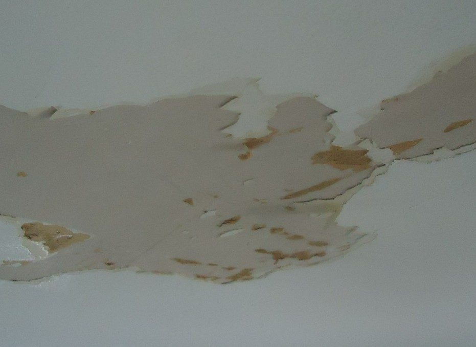

Damp proofing in Cape Town
Rising damp, penetrating damp and condensation look similar on a wall and need completely different repairs. Getting the diagnosis right is most of the job.
Three kinds of damp, three different repairs
Damp is a symptom, not a diagnosis. The same bubbling paint and tide mark at skirting height can come from groundwater rising through a failed damp course, from rain entering a wall from outside, or from warm air condensing on a cold internal surface. Treat the wrong one and the damp returns within a season, which is why so many owners end up repainting the same wall every year. Rising damp is groundwater moving up through the brickwork because the original damp proof course has failed, been bridged by a later concrete path or patio, or was never there. It stops at roughly a metre and leaves a horizontal tide mark. Penetrating damp comes in from outside: a cracked render, a failed window seal, a leaking gutter soaking the wall head, or a plinth that sits below the external ground level. Condensation is different again, and common in Cape Town's older houses where windows have been sealed and heating added without any ventilation. We identify which one you have before quoting. That means moisture readings at different heights, a look at the external ground level and drainage, and a check on how the room is ventilated and heated.

Illustrative photograph, not a Plinth job: Tomwsulcer, Wikimedia Commons (public domain) CC0
What we treat
Each of these needs its own method. A chemical injection will not fix a leaking gutter, and a coat of sealant will not fix rising damp.
Rising damp
Damp course injection, plus removal of the plaster that has absorbed salts, replaced with a salt-resistant render.
Get estimate →Penetrating damp
Found on the outside and repaired there: render, sealant, flashings, sills and the ground level against the wall.
Get estimate →Condensation and mould
Ventilation, extraction and surface treatment. Mould is a symptom of moist air, not of a leaking wall.
Get estimate →Bridged damp course
Paths, patios and paving laid above the damp course, cut back and detailed so the wall can dry.
Get estimate →Salt-damaged plaster
Contaminated plaster removed to a sound base and replaced with a render that tolerates salt.
Get estimate →Plinth and foundation level
The base of the wall where ground water sits against the structure, including the plinth detail many older Cape homes rely on.
Get estimate →What changes the price of damp repair
| Factor | Why it moves the number |
|---|---|
| Which damp it is | A condensation problem needs ventilation. Rising damp needs a damp course and new plaster. The costs are not comparable. |
| Length of affected wall | Injection and replastering are priced by the metre of wall treated, inside and out. |
| Access to the base | Paving, patios and planted beds against the wall have to be opened or cut back to treat it properly. |
| Internal finish | If the plaster has to come off, the skirting, paint and sometimes the floor finish come with it. |
| Whether the outside is the cause | Fixing the external detail is often the cheaper half and the only one that lasts. |
We diagnose first and quote the repair that matches the cause. If a cheaper repair will genuinely hold, we will price that instead.
Get a written damp proofing estimate
Get a damp diagnosis and a written estimate. No injection quoted before the cause is known.
How we work
1. Read the wall
Moisture readings at several heights and positions to establish the pattern.
2. Check the outside
Ground levels, drainage, render condition, sills, gutters and any later addition bridging the damp course.
3. Diagnose in writing
Which damp it is, what is causing it and what the repair involves, before any work is priced.
4. Treat the cause
Injection, external repair, drainage or ventilation, depending on what the diagnosis says.
5. Replaster and monitor
Salt-resistant render where needed, and a return visit to confirm the wall is drying.
- Diagnosis before treatment: We will not sell you an injection for a problem caused by a leaking gutter.
- We fix the outside too: Most damp repairs fail because only the inside was treated. We price both sides.
- Salt-aware replastering: Contaminated plaster comes off and goes back with a render that tolerates salt, not standard skim.
- We return to check: A drying wall tells you whether the repair worked. We come back and read it.
The Plinth Standard
- Written scope + fixed price before we start
- Photo updates if you're not on site
- 12-month workmanship warranty on renovations
- Goodwood-based, fast response across Cape Town
Damp Proofing across Cape Town
We are based in Goodwood and cover Cape Town within about 25km.